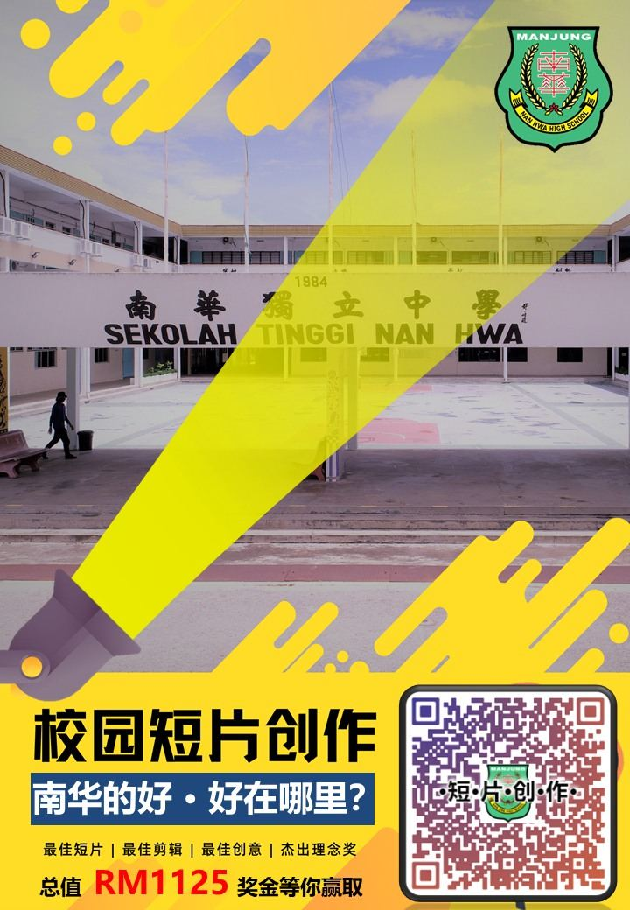
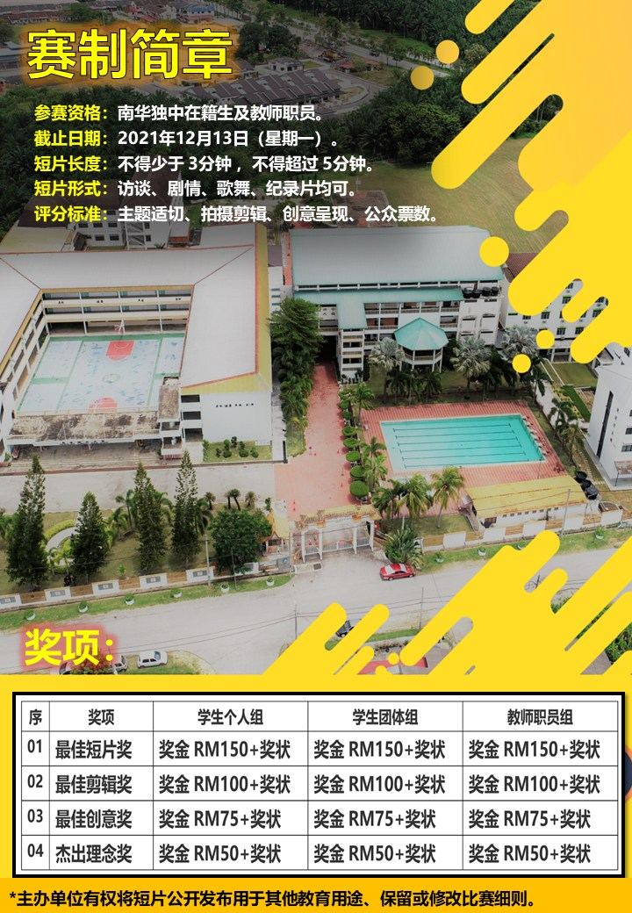

为了记录学生日常视角中对学校的所见所闻，本校联课处特此举办2021年校园短片创作
为了记录学生日常视角中对学校的所见所闻，本校联课处特此举办2021年校园短片创作比赛，主题为 “南华的好·好在哪里？”，借助学生的才华与看法，让校方得以重新的眼光认识学校的好。在此呼吁全体南华独中在籍学生以及教职员参加。


为了记录学生日常视角中对学校的所见所闻，本校联课处特此举办2021年校园短片创作比赛，主题为 “南华的好·好在哪里？”，借助学生的才华与看法，让校方得以重新的眼光认识学校的好。在此呼吁全体南华独中在籍学生以及教职员参加。

